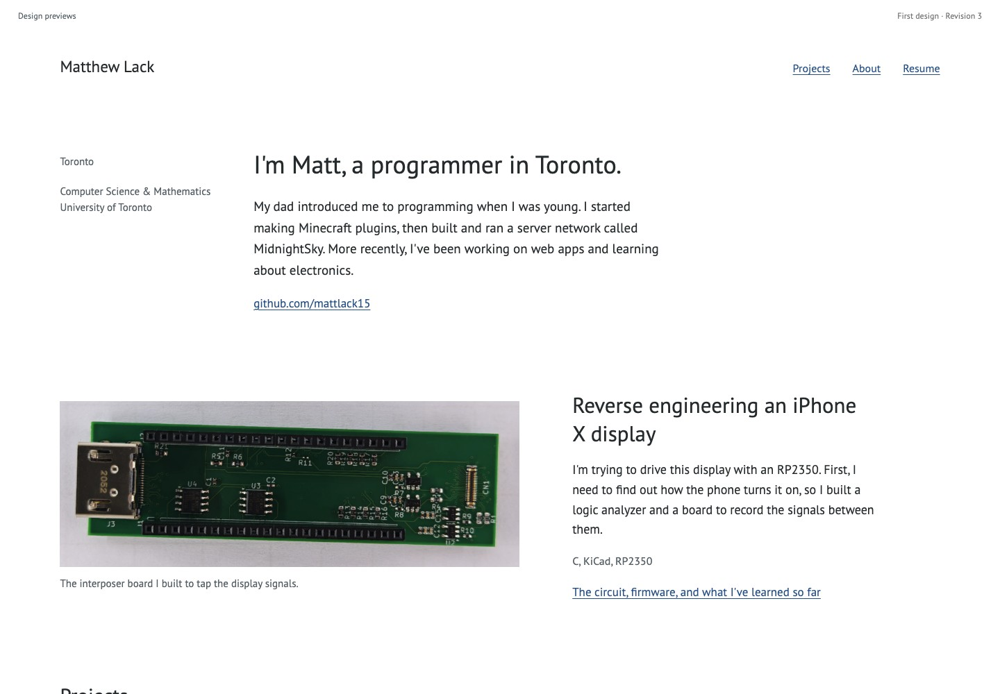
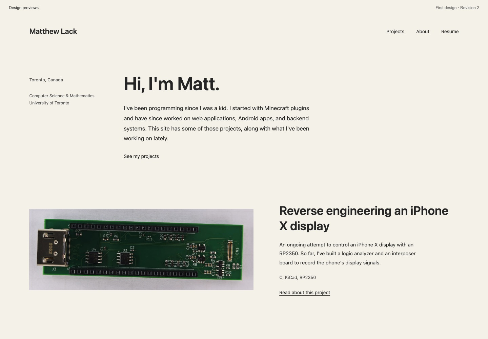
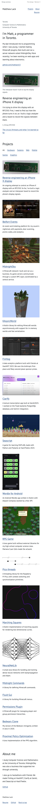

The same columns and section order, with changes to typography, image presentation, links, and wording.



Checked at 1440, 768, 390, and 320 pixels, including font loading, image proportions, category filters, and keyboard navigation.